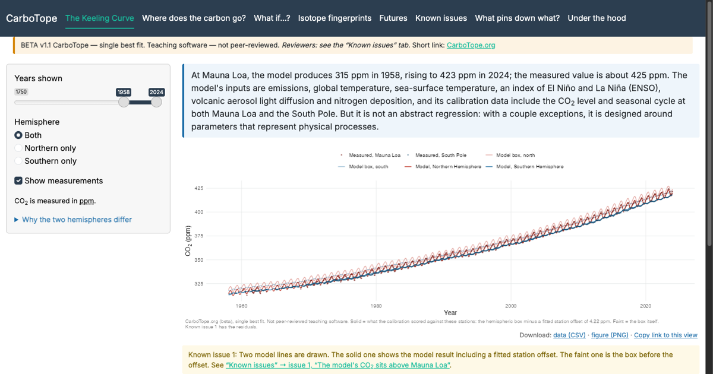

CarboTope is a new simple carbon cycle model (designed for teaching, not research, and still in beta) and accompanying website, aimed at informed users who want to better understand how seasonal patterns, hemispheric differences, and different isotopes all interact. It is free and open source.
Open CarboTope
The model starts when you open it. The first view can take about 30 seconds.

In the app
- The Keeling Curve
- Where does the carbon go?
- What if…?
- Isotope fingerprints
- Futures
- Known issues
- What pins down what?
- Under the hood
Beta teaching software, not peer-reviewed. The app's “Known issues” tab lists where the model and the measurements disagree.